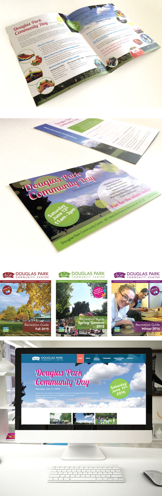

|
|
||
|  |
|
Douglas Park Community Centre - Brochure Design + Website Design
One of the Vancouver Board of Parks and Recreation community centres on Cambie and 22nd Ave, Vancouver BC. Working as a contract designer for their seasonal guideline brochures and their promotional marketing designs. Created editorial publishing template and editing regularly. Also their website design has completed last 2015. www.douglasparkcc.org "The Office notified me today that the brochures have arrived onsite. EVERYBODY LOVES IT!! I can't thank-you enough for all your patience, availability, attention to detail and creativity. |